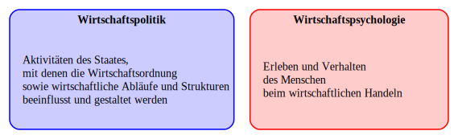

Code
# Wirtschaftsolitik und Wirtschaftspsychologie
from graphviz import Digraph
from IPython.display import display
dot = Digraph()
# Layout
dot.attr(rankdir='LR',
nodesep='3,5')
# Cluster Wirtschaftspolitik
with dot.subgraph(name='cluster_wirtschaftspolitik') as c:
c.attr(label='Wirtschaftspolitik',
fontname="times-bold",
style='filled,rounded',
fillcolor='#0000ff33',
color='#0000ff',
penwidth='1.5',
radius='10')
c.node('a', 'Aktivitäten des Staates,\l'
'mit denen die Wirtschaftsordnung\l'
'sowie wirtschaftliche Abläufe und Strukturen\l'
'beeinflusst und gestaltet werden\l',
shape='none',
width='3.2', # Manuelle Größenanpassung
height='1.5')
# Cluster Wirtschaftspsychologie
with dot.subgraph(name='cluster_wirtschaftspsychologie') as c:
c.attr(label='Wirtschaftspsychologie',
fontname="times-bold",
style='filled,rounded',
fillcolor='#ff000033',
color='#ff0000',
penwidth='1.5',
radius='10')
c.node('b', 'Erleben und Verhalten\l'
'des Menschen\l'
'beim wirtschaftlichen Handeln\l',
shape='none',
width='3.2', # Gleiche Breite wie Cluster A
height='1.5') # Gleiche Höhe wie Cluster A
# Kanten
dot.edge('a','b', style='invis')
# Ausgabe
display(dot)